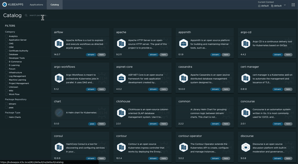
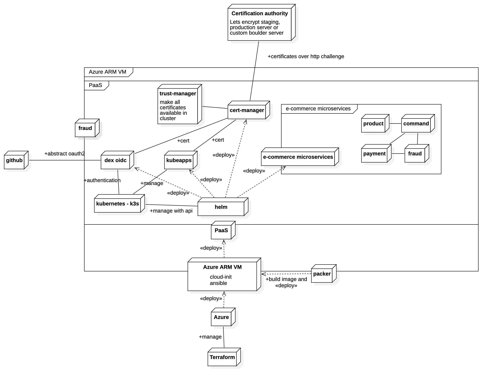
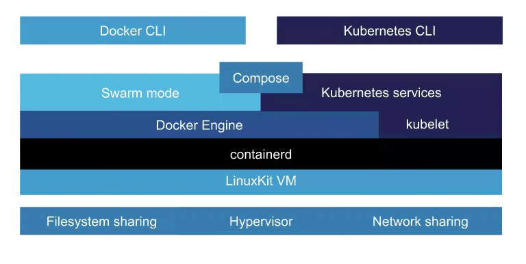
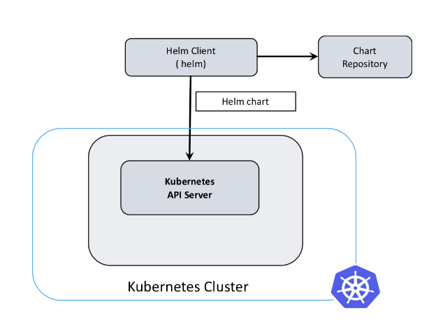
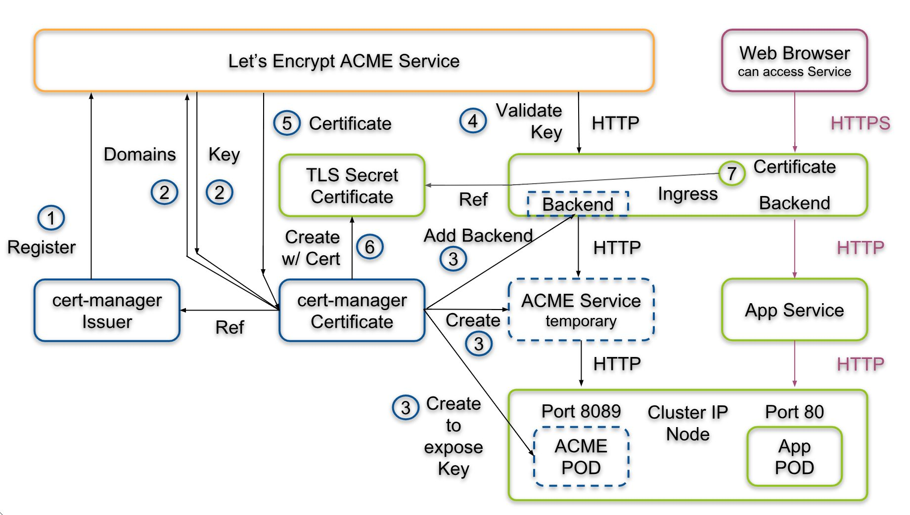
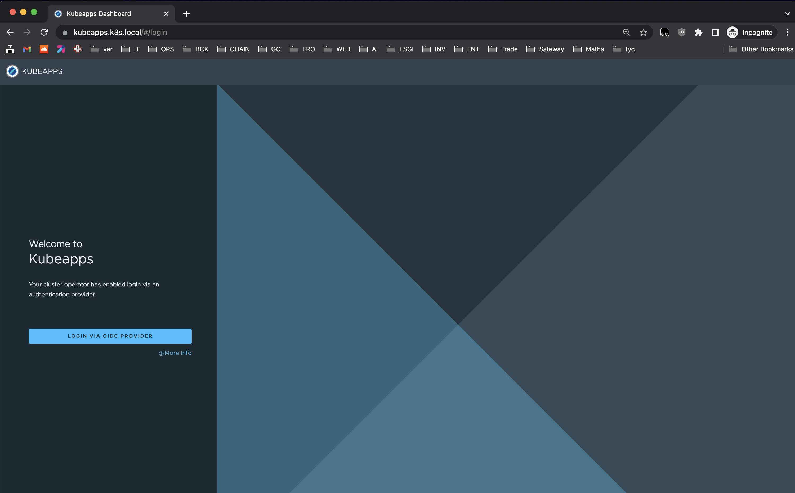
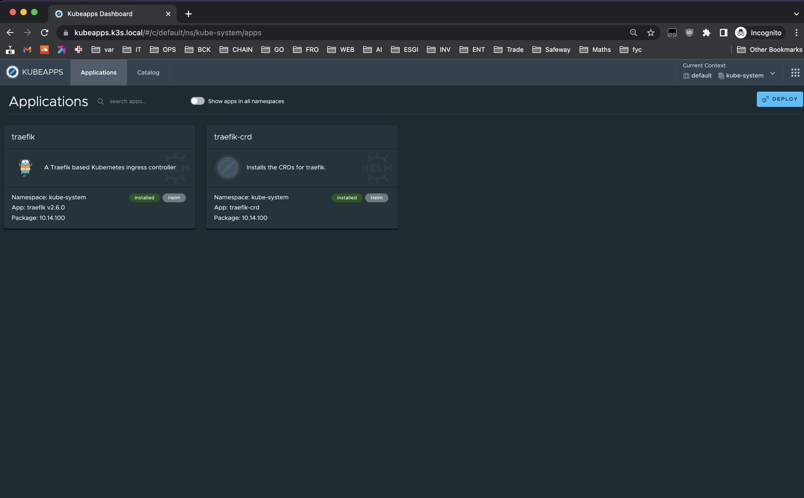
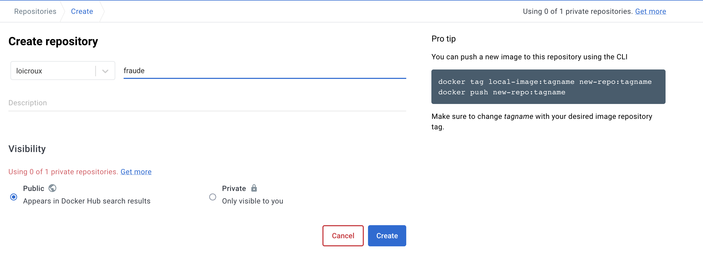

Print Site
Tutoriel PaaS¶

Architecture¶

Requis pour suivre le tutoriel¶
Matériel et outils¶
- Un PC / Mac peu importe l'OS (PC risque d'être instable)
- Un compte github
- Un compte azure avec le crédit de 100$ offert pour les étudiants (avec l'email myges cela fonctionne normalement)
- Valider votre compte github student pour ne pas avoir à acheter de nom de domaine. Pour valider utilisez votre adresse mail de l'université.
- Un compte docker hub
Compétences¶
- Des bases d'administration système et réseau linux
- Algorithmie et programmation sur au moins un langage
- Des bases sur les certificats "Secure socket layer" et leur utilisation de la cryptographie asymétrique
- Connaissance du langage de configuration
yaml - Culture sur les infrastructures de déploiement multienvironnements (staging, prod)
- Connaissance des concepts d'environnements isolés linux ou containers
- L'outil de gestion de version Git l'hôte git github
Sommaire¶
- 0. Installation
- 1. Rôle ansible
- 1.1 Provisionning du paas avec ansible
- 1.2 Présentation de K3s et installation
- 1.3 Installation des manifests (algo)
- 1.4 Autorité de certification
- 1.5 Mise en place des communications réseau du cluster
- 1.6 Utiliser notre autorité avec cert-manager
- 1.7 Faire confiance à notre autorité de certification
- 1.8 Authentification et des habilitations
- 1.9 Kubeapps
- 2. Packer
- 3. Terraform / Azure
Introduction et installation¶
L'objectif de ce tutoriel est de vous permettre de créer sur une petite machine ou sur un serveur personnel un PaaS (Platform as a service). Un PaaS permet de déployer des applications en microservices. Celui-ci sera basé sur kubernetes pour la conteneurisation et Kubeapps pour l'interface de déploiement.
L'optique de cet outillage suivra :
-
le principe d'immutable infrastructure avec l'idée de recréer plutôt que de mettre à jour. Ainsi nous aurons recour à des iso linux déjà prêt pour déployer la plateforme kubernetes / kubeapps directement sur un serveur.
-
Le principe d'infrastructure as code (IaC) en gardant toutes la spécification de notre infrastructure dans des configurations et scripts. On utilisera également des tests basiques de nos configurations.
Pour cela nous ferons appel à un socle technique composé de :
- l'outil
k3squi simplifie l'installation de kubernetes sur des machines ARM tout en restant compatible avec les architectures classiques X64. Il fourni par défaut des pods (containers en execution) pour inclure des fonctionnalités souvent recherchés sur ce type de configuration edge computing. (reverse proxy, configuration DNS...) - Packer pour créer des images iso de machine linux
- Ansible pour provisioner cette image
- Azure pour nous founir des serveurs accessible en ssh sur lequels nous pourrons mettre en ligne
- Terraform pour contrôler azure de manière IaC et de déclencher toute la mise en place du PaaS dessus.
Installation de Docker¶
Pour rappel l'architecture de base de docker :

Source documentation docker
et les couches des systèmes de conteneurisation docker et kubernetes :

Pour utilisateurs de windows il faut un WSL.
Pour WSL :
Vous utilisez une version de Windows 11 ou supérieure (numéro de version de Windows 22000 ou supérieur).
Vous avez activé le composant optionnel Virtual Machine Platform
Vous pouvez le faire en exécutant : dism.exe /online /enable-feature /featurename:VirtualMachinePlatform /all dans une invite PowerShell élevée.
Cliquez sur ce [lien] (https://aka.ms/wslstorepage) pour accéder à la page du magasin WSL et cliquez sur Installer pour installer WSL.
Traduit avec www.DeepL.com/Translator (version gratuite)
- Télécharger après avoir suivi cette documentation la distribution linux
Ubuntu 20.04.5 LTSdepuis le windows store. - + Windows terminal bien que pas obligatoire il est très pratique pour accéder au shell
Ensuite dans vscode installer l'extension wsl ms-vscode-remote.remote-wsl.
Laissez-le ensuite finir de s'initialiser.
Mise à jour de Linux¶
Ensuite bonne habitude, on met à jour linux :
Puis activer systemd en modifiant /etc/wsl.conf dans votre distribution linux :
Puis redémarrer l'app Ubuntu. Si des problèmes apparaissent encore lancer la commande wsl --shutdown depuis un powershell en administrateur avant de lancer le shell WSL.
Ensuite pour finaliser l'installation de docker pour éviter les problèmes de droit avec rancher desktop :
sudo addgroup --system docker
sudo adduser $USER docker
newgrp docker
# And something needs to be done so $USER always runs in group `docker` on the `Ubuntu` WSL
sudo chown root:docker /var/run/docker.sock
sudo chmod g+w /var/run/docker.sock
Rancher comme alternative à docker desktop¶
Rancher l'alternative mieux configurée et sans soucis de license à docker desktop. Il est portable sur windows et mac et nous permet d'avoir une expérience docker complète et fonctionnelle sur notre machine.
Dans les choix proposés dans la mise en place : - Décocher kubernetes - Choisissez dockerd comme moteur de conteneurisation
Vérifier que vous avez bien la commande docker disponible sinon ajouter ~/.rd/bin à votre PATH :
Puis dans wsl :
Installation de l'environnement python¶
Maintenant tout ce que nous allons faire se trouve dans la ligne de commande sur un shell bash ou zsh
Conda : docs.conda.io. Installer simplement avec le setup .pkg pour mac.
Pour Linux et Windows avec WSL utilisez la ligne de commande ci-dessous pour l'installer
wget https://repo.anaconda.com/miniconda/Miniconda3-latest-Linux-x86_64.sh -P /tmp chmod +x /tmp/Miniconda3-latest-Linux-x86_64.sh /tmp/Miniconda3-latest-Linux-x86_64.sh -p $HOME/minicondaPour arm :
Veillez à bien accepter toutes les propositions (licence terms, initialize Miniconda3).
Puis lancer conda init zsh (ou bash si vous préférez)
Relancer votre shell pour appliquer (commande exec $SHELL)
Installation de vscode¶
- Avec installer toutes plateformes
- Homebrew sur mac
brew install --cask visual-studio-code - Avec snap pour linux sur linux
1.1 Provisionning du paas avec ansible¶
Cette partie très longue présente comment créer le rôle ansible qui va permettre de provisionner un cluster kubernetes sur un serveur linux puis d'y mettre en place la solution de PaaS.
L'objectif d'ansible est de déployer des configurations et des outils sur des machines. À l'aide d'un format de configuration simple proche de l'algorithmie, nous pourrons amener tous les outils indispensables à la création de notre PaaS.
Installer ansible et création du rôle¶
Ansible est un outil dépendant de l'écosystème python. Pour simplifier la gestion des dépendances
qui risquent de faire conflit avec d'autres installations
de python, nous allons utiliser miniconda installé précédemment.
Molecule est un outil permettant de tester nos suites de configurations ansible contenus dans des rôles ou des tâches.
Créer votre espace de travail :
Ensuite on initialise un environnement virtuel python avec sa propre version de python 3.9 et les dépendances ansible et molecule. Ainsi nos dépendances n'entrent pas en conflit avec d'autres pouvant être incompatible.
Installer ansible et molecule préconfiguré pour utiliser docker (rancher desktop).
Sur windows lancez cette commande pour avoir accès aux dépendances python directement.
Vérifier que tous fonctionne avec ansible --version.
Vous devriez avoir ansible [core 2.13.4] dans le retour
Bonus pour faire fonctionner l'extension VsCode ansible¶
Warning: Utilisateur du WSL Pour utiliser vscode, utilisez le impérativement via la ligne de commande linux WSL dans votre projet
~/paas-tutorial:code .Vscode :
.vscode/settings.jsonRemplacez bien le chemin avec le résultat de cette commandewhich pythonminiconda sur wsl, mambaforge sur mac
B. Playbook ansible¶
Un playbook ansible est un projet chargé de lancer plusieurs rôles différents sur des machines disponibles sur le réseau via ssh. (localhost par exemple peut être provisioné).
Pour aller plus loin dans le fonctionnement de ansible, cet outil s'appuie intégralement sur l'environnement python installé sur une machine invités (que l'on provisionne). Grâce à python ansible va abstraire la complexité de l'administration système linux avec des déclarations yaml, des templates pour créer des fichiers dynamiquement, des structures de contrôles algorithmique et des variables manipulables avec des filters.
On Commence :¶
On va créer un dossier playbook pour mettre tout ce qui concerne ansible
Aussi, on va geler les versions des dépendances dans un fichier requirements pour qu'un autre environnement puisse facilement retrouver l'état de votre installation sans problèmes de compatibilités.
Geler les dépendances pour éviter des soucis de compatibilité plus tard.
Nous allons suivre l'alternative-directory-layout recommandé par cette documentation
Voici la suite complète de commande pour créer la structure du playbook.
Ensuite dans requirements.yaml on importe les roles que l'on utilise en dépendances.
Ansible galaxy est le gestionnaire de paquet pour importer des rôles et des collections ansible dans un playbook.
Note pour l'instant, il y a un bug avec galaxy nous empêchant de récupérer la bonne version de k3s. On peut forcer l'utilisation directe de git pour récupérer la version 3.3.0
| playbook/requirements.yaml | |
|---|---|
Les collections vont servir à ajouter des fonctionnalités à ansible et ses directives de tâches. Ici on ajoute les fonctionnalités fondamentales ainsi que celles pour manipuler notre cluster kubernetes (abstraction de la commande kubectl).
Les roles correspondent à des suites de tâches qui vont installer et configurer un outil sur une machine. Ici on utilisera un role k3s qui s'occupe de configurer en fonction de nos paramètres le cluster k3s.
Note K3s n'utilise pas
dockermaiscontainerdpour utiliser les fonctionnalités de conteneur linux.
Pour installer ces requirements maintenant on lance dans le dossier playbook/ :
Normalement tous est installé correctement et prêt à l'emploi.
C. Initialiser le rôle installant un Cluster kubernetes (k3s)¶
Pour suivre la convention d'ansible nous allons procéder en créant un rôle. Il sera ici interne à notre projet pour simplifier, mais on peut imaginer facilement le déplacer dans un autre repository. Son objectif sera d'installer un ensemble de solutions pour faire fonctionner kubeapps.
Dans le dossier playbook faites donc :
mkdir roles
cd roles
ansible-galaxy init kubeapps
cd kubeapps
# Créer un scénario de test par défaut
molecule init scenario -d docker default
Vous devriez obtenir cette structure dans le nouveau dossier playbook/ :
Voici ce que va être rendu comme structure de rôle.
Nous allons ensuite mettre à jour les métadonnées ansible galaxy avec notamment la dépendance kubernetes (rôle k3s). Il y a déjà du contenu présent, ne supprimer rien et ajouter à la ligne 51 la case du tableau dependencies.
| playbook/roles/kubeapps/meta/main.yml | |
|---|---|
k3s_release_versionest indispensable de ne pas monter au-dessus de la version1.21. Dans le contexte docker in docker, il y a des problèmes de compatibilité avec les fonctionnalités linux récentes (QOS, cgroups, ...).
Ensuite vous devez obligatoirement définir ces Informations sur les metas du rôles:
| playbook/roles/kubeapps/meta/main.yml | |
|---|---|
Le rôle kubernetes se lancera donc directement avant les tâches de celui de kubeapps.
1.2 Présentation de K3s et installation¶
K3s est une distribution légère de Kubernetes conçue pour être facile à installer et à utiliser dans des environnements à ressources limitées tels que les appareils edge et IoT. Il convient également bien pour fonctionner sur des appareils basés sur Arm, ce qui en fait un choix populaire pour les grappes Raspberry Pi.
K3s peut exécuter toutes les charges de travail Kubernetes, mais il a une empreinte plus petite et nécessite moins de ressources qu'une installation Kubernetes traditionnelle.
Notions théoriques sur kubernetes¶
Noeud¶
Un nœud est une machine de travail dans Kubernetes, un groupe de nœud va composer ce qu'on appelle un cluster (grappe) de serveurs. Chaque nœud contient les services nécessaires à l'exécution de pods et est géré par les composants du master.
Note dans notre cas nous ferons appel à un seul noeud master
Namespace¶
Clusters virtuels présents sur le même cluster physique. Ces clusters virtuels sont appelés namespaces. Ils utilisent les fonctionnalités de groupage de linux Cgroup.
Les pods¶
source documentation officielle
Un pod est un groupe d'un ou plusieurs conteneurs (comme des conteneurs Docker), ayant du stockage/réseau partagé et une spécification sur la manière d'exécuter ces conteneurs. Les éléments d'un pod sont toujours co-localisés et co-ordonnancés, et s'exécutent dans un contexte partagé. Un pod modélise un "hôte logique" spécifique à une application - il contient un ou plusieurs conteneurs applicatifs qui sont étroitement liés.
Un pod peut être :
- Temporaire (Completed) pour effectuer une tâches particulière (cron, jouer des script, déploiement d'autres pods...)
- Définitif soit une application en exécution
Déploiement¶
Comme un le fait en développement un fichier docker-compose, cette ressource décrit la mise en place des containers avant de les placer dans un pod (plusieurs containers peuvent se placer dans un pod)
Services¶
Une manière abstraite d'exposer une application s'exécutant sur un ensemble de Pods en tant que service réseau.
Ingress¶
Il s'agit du composant de kubernetes permettant de gérer au travers d'une technologie de reverse proxy et de répartition de charge le trafic réseau entrant (http(s)).
Note Un reverse proxy est à l'inverse d'un proxy chargé d'effectuer une action à partir d'une requête réseau externe. On l'utilise majoritairement avec un serveur DNS qui fait pointer des noms de domaines et sous domaines vers l'adresse Ip du serveur sur lequel un reverse proxy est installé. Par exemple, il va servir à rediriger le traffic de la requête
kubeapps.k3s.localvers une adresse et port réseau attribué par kubernetes à un pod.
Voici pour résumer l'achitecture réseau d'un cluster kubernetes :

Spécificité de k3s¶
K3s est une sorte d'implémentation alléger de kubernetes pour le rendre portable sur plus de plateformes comme des nano ordinateur et des infrastructures en périphérie de réseau (Edge computing).
Nous avons donc à la place de etcd comme outil de persistance du stockage sqlite, un ingress (ou reverse proxy) par défaut à traefik et on trouve nombreux composants coeur comme le kuber-controller-manager ou le scheduder ramené au plus proche du système (services réseaux au lieu de pods).
L'architecture autour de Kubeapps¶
Pour rappel kubeapps nous sert à déployer des applications conteneurisées "packagées" au format helm chart dans un cluster kubernetes. Il aura besoin de plusieurs autres outils pour fonctionner de manière sécurisée avec kubernetes.
- Une autorité de certification locale et Acme server pour nos tests pebble
- Un gestionnaire de certificats dédié à kubernetes cert-manager
- Un serveur openid exploitant une application oauth2 github : dex idp
Voilà donc tout ce qu'on aura à mettre en place dans notre rôle ansible.
E. Premiers tests sur le rôle¶
Nous allons d'abord définir l'utilisation d'une distribution ubuntu pour installer nos outils. Pour les tests en local, nous faisons du docker in docker ce qui impose des configurations particulières.
Warning : le
namede la platform va nous servir d'adresse réseau par laquelle ansible sur l'hôte va pouvoir accéder en ssh. Il est indispensable de le renseigner, car le role k3s en a besoin pour bien créer les nœud du cluster kubernetes. (même si on en utilise un seul)
L'image du container geerlingguy/docker-${MOLECULE_DISTRO:-ubuntu2004} va nous permettre d'utiliser un linux préconfiguré qui s'initialise avec le démon systemd. Celui ci est une fonctionnalité assez neuve du coeur et recommandée pour la gestion des services en arrière plan (daemons) soit ici k3s
On note que l'on publie le port 80 et 443 à des fins de debug pour exposer Ingress.
32444le port pebble servira plus tard pour accéder à notre serveur ACME*Warning* vérifie bien qu'aucun autre processus su votre machine n'utilise déjà le port 80 et 443
Les volumes que l'on utilise servent à rendre disponible des fonctionnalités du coeur linux désactivées par défaut sur des containers docker comme systemd et les espaces de nom / cgroup version 2.
Même chose pour le répertoire temporaire tmpfs qui assurent le bon fonctionnement de ces outils.
Enfin priviledgied: true nous donne les droits administrateur complets sur le système du container.
Le playbook verifier va ensuite nous permettre de tester la bonne exécution du rôle et de ses dépendances.
Le playbook converge¶
Ce playbook représente la façon dont on utilisera en condition réelle notre appel du rôle en ajoutant cependant des prérequis spécifique à notre environnement de test.
Note la partie
dig_host_docker_internalservira à récupérer l'adresse ip de l'hôte docker pour pouvoir y accéder depuis les pods. C'est une astuce pour contourner le problème de résolution de domaines des pods avec un réseau sur localhost. C'est grâce ànetwork_mode: hostque l'on peut faire cela.
Notes : -
hosts: allpermet de jouer le playbook sur tous les hôtes -role: {{etc...}}résoud le chemin de fichier vers le répertoire du rôle - Les pré-tâches servent à installer des packages linux et python manquant à notre container utiles pour l'environnement local et les tests.
Le playbook verify¶
Nous allons ensuite vérifier que k3s est bien prêt avec deux vérifications :
- Vérification de la bonne initialisation du nœud master simplement en vérifiant que le retour de la commande contient bien "Ready master".
On utilise pour cette fois la commande kubectl directement. Pour en savoir plus pour cette commande centrale dans l'utilisation d'un cluster kubernetes c'est ici
Lancer votre premier test avec molecule test et voilà vous avez un playbook offrant un cluster kubernetes prêt à l'emploi tout en suivant rigoureusement le concept du test driven development pour plus de fiabilité.
Note : Vous pouvez aussi lancer
molecule test --destroy neverpour ensuite garder le conteneur et debugger l'état du système après le "provision" ansible avecmolecule login(qui équivaut àdocker exec -it node-0 bash)Note : En cas d'erreur
export ANSIBLE_STDOUT_CALLBACK=yamlavant de lancermolecule testpour avoir un meilleur rendu de la possible erreur.
Ensuite dans la suite du fichier on procède à une vérification des pods de la suite k3s.
Vous pourrez relancer seulement la suite de vérification avec
molecule verifysi votre container n'a pas été détruit (--destroy false)
Nous savons ici que k3s est lancé. En sachant que ce rôle est externe nous n'avons pas besoin de faire plus de tests sur ces composants centraux disposés dans le namespace kube-system.
On valide bien que le service est de type cluster ip. Cela signifie qu'il est exposé dans le cluster avec sa propre adresse. Si le type aurait été vide cela aurait voulu dire soit que quelque chose n'est pas correctement configuré soit que kubernetes n'est pas disposé à attribué une configuration réseau à ce service.
INFO Kubernetes utilise l'outil natif de linux
iptablespour faire fonctionner cette ressource.
Optionnel - Utilisation avec les extensions Vscode¶
1.3 Algo d'installation des manifests¶
Nous allons avoir recours ici à deux nouvelles notions de l'écosystème de kubernetes qui sont
- Les manifests que l'on utilise pour décrire une ressources (déploiement, service, pods, ingress,...) à déployer dans le cluster avec la commande
kubectl
Pour l'exemple cette commande kubectl get pods -n kube-system récupère la liste des pods dans le namespace du système de k3s
Voici le retour qu'elle nous donne :
"local-path-provisioner-84bb864455-8dz4g 1/1 Running 0 7h58m",
"svclb-traefik-qv89r 2/2 Running 0 7h57m",
"coredns-574bcc6c46-pr6vq 1/1 Running 0 7h58m",
"metrics-server-ff9dbcb6c-ncr4n 1/1 Running 0 7h58m",
"traefik-56c4b88c4b-p4xt6 1/1 Running 0 7h57m",
Les commandes kubectl fonctionnent tout le temps de la sorte kubectl <action> <resource> -n <namespace> -o <format>
<action>soit une action CRUD :edit,get,describe<resource>pour en savoir plus sur les différentes ressources disponibleskubectl api-resources. Nous aurons majoritairement recours àdeployment,service,ingress,pod,secret,configmap-oest très pratique quand on veut un vrai détail sur les ressources avec notamment le-o yaml
La commande pod est un peu particulière : voici un exemple utilisant le retour au-dessus en exemple :
kubectl get pods -n kube-system traefik-56c4b88c4b-p4xt6(on précise le nom complet du pod)Astuce le flag
-Apermet de regarder tous les pod sur n'importe quel namespace. Par exemplekubectl get po -A(poest un diminutif depods, on a aussi par exemplesvcpour service)
- Helm un gestionnaire de paquet pour distribuer des charts (ou package) contenant des suites de manifest kubernetes à déployer sur le cluster.
Pour cela nous aurons recours à cette utilisation au travers de k3s et d'un module
helm.cattle.io/v1permettant le deploiement automatique de resources kubernetes.

Donc dans playbook/roles/kubeapps/tasks nous allons travailler sur ces éléments de ansible :
-
tasks/main.yaml: déclenche certaines suites de tâches en fonction de l'état choisi dans les variables de configuration. Elles sont définies dans l'ordre : -
Les variables par défaut
default/main.yaml. On pourra par la suite les surcharger avec celle du playbook (inventories/{env}/all.yaml) -
Les variables par défaut
default/vars.yamlsont comme default/main.yaml mais pour des variables non configurables. -
templates/qui contient des fichiers.j2ou templatesjinjareprésentant plusieurs manifests kubernetes. -
tasks/manifests.yaml: celui-ci va s'occuper de placer les manifests kubernetes dans le répertoire/var/lib/rancher/k3s/server/manifestspour que k3s déploie automatiquement les ressources décrites dans ceux-ci.
Source pour plus d'informations doc k3s
On peut remplir le fichier d'entrée comme ceci :
Astuce : Voici la commande molecule qui permettra de lancer seulement les taches avec le
tags: [kubeapps]ceci une fois notre playbook utilisable :
Puis allons configurer une suite de tâches pour installer les manifests qu'ils soient une ressource api ou un chart helm.
On commence par mettre en place une boucle ansible prenant en paramètre une liste de dictionnaires python. Ceux-ci comportes comme sous propriétés qui définissent la façon dont notre programme se comporte :
src: un fichier manifest au formatyaml.j2à déployer sur le noeud. Ce format donne la possibilité d'intégrer lesvariablesetfactsansible.ns: pour un namespace sur lequel ajouter le chart et pouvant aussi être un déploiement Kubernetes dont il va valloir attendre le succès.deploy: Pour préciser le nom du déploiement ci celui-ci n'est pas le même que le namespacecondition: Simple booléen pour executé ou non le manifest
Info: Les facts sont des variables définis dynamiquement à partir de l'environnement ou de ce qu'on décide de conserver de nos traitements pendant le processus ansible
Pour expliquer l'utilisation du module ansible kubernetes.core.k8s_info. On attend que le retour de la commande kubectl reformatés en json atteigne des conditions.
Ces conditions sont ici testées toutes les 5 secondes (wait_sleep) et vont rendre une erreur si elles ne sont toujours pas bonnes au bout de 350s.
Voici ensuite ce qui est rendus entièrement par le deployment_infos dans la directive register qui permet à ansible de stocker ce fact / variable.
Voici un exemple de retour pour un déploiement fonctionnel pour mieux comprendre.
"conditions": [
{
"lastTransitionTime": "2022-12-05T15:11:56Z",
"lastUpdateTime": "2022-12-05T15:11:56Z",
"message": "Deployment has minimum availability.",
"reason": "MinimumReplicasAvailable",
"status": "True",
"type": "Available"
},
{
"lastTransitionTime": "2022-12-05T15:11:46Z",
"lastUpdateTime": "2022-12-05T15:11:56Z",
"message": "ReplicaSet \"dex-5bd6ffdfd\" has successfully progressed.",
"reason": "NewReplicaSetAvailable",
"status": "True",
"type": "Progressing"
}
],
On remarque que le status à "True" signigie que nous avons réussi, que la reason indique qu'un replica à été créé. Un replica est une instance de pod dans un contexte où l'on peut dupliquer les pod pour répartir la charge.
Note la commande k8s_info donne tous les états par lesquels sont passé le pod. On voit ici le passage de
AvailableàProgressingqui signifie que le déploiement est fonctionnel. (le wording est un peu étrange, mais c'est comme ça).
Revenons à la déclaration de la boucle des manifests pour ajouter le la liste loop que l'on laisse avec des null en propriétés pour l'instant.
De plus le when permettra de ne pas exécuter certains manifests en fonction des conditions que l'on aura définies avec condition.
| playbook/roles/kubeapps/tasks/manifests.yml | |
|---|---|
1.4 Autorité de certification¶
Premièrement va falloir que les services soient accessibles depuis l'extérieur du cluster sur notre réseau local.
Ensuite que notre plateforme va adopter un principe zero-trust pour notre réseau. On va donc s'assurer que toutes les communication entre services sont cryptées avec TLS (https). Pour cela on va faire appel à un ensemble d'outils de gestion des certificats dans un cluster kubernetes.
Pebble¶
On va recourir à une autorité de certification locale avec l'outil pebble. Il s'agit d'une implémentation de l'acme server de lets encrypt dédiée au test.
Pour rappel Lets-encrypt Acme est un protocole embarquant une autorité de certification générant des certificats pour tls simplement au travers de plusieurs type de "challenges". On peut obtenir des certificats juste en ayant un serveur http disponible sur le réseau (ou internet) ou en ayant accès à l'édition des zones d'un serveur dns (en fonction du fournisseur).
Il est cependant recommandé d'utiliser un serveur acme de test pour éviter de saturer les quotas de Let's-encrypt. Ici nous sommes en local et nos services ne sont pas accessibles depuis internet.
Création de notre autorité avec docker et le playbook prepare de molecule¶
Ce playbook se lance avant le converge soit avant l'exécution de notre rôle et lance un container docker sur notre machine. Comme précisé avant, le network_mode à host nous permet d'hérité du localhost de votre machine et permet d'accéder aux services sur l'autre container sur lequel on installe notre rôle.
playbook_dirréférence le dossier ou notre playbook molecule est lancé :playbook/roles/kubeapps/molecule/default/
Ensuite nous avons besoin de deux certificats racines pour initialiser notre autorité de certification. On les récupère sur le projet github de pebble directement avec cette commande.
Warning Attention n'utiliser surtout pas pebble et ces certificats en production
mkdir -p playbook/roles/kubeapps/molecule/default/pebble
curl -L https://raw.githubusercontent.com/letsencrypt/pebble/main/test/certs/localhost/cert.pem > playbook/roles/kubeapps/molecule/default/pebble/cert.pem
curl -L https://raw.githubusercontent.com/letsencrypt/pebble/main/test/certs/localhost/key.pem > playbook/roles/kubeapps/molecule/default/pebble/key.pem
Puis on crée le fichier de configuration de notre serveur Acme :
playbook/roles/kubeapps/molecule/default/pebble/pebble-config.json
{
"pebble": {
"listenAddress": "0.0.0.0:14000",
"managementListenAddress": "0.0.0.0:15000",
"certificate": "/pebble/cert.pem",
"privateKey": "/pebble/key.pem",
"httpPort": 80,
"tlsPort": 443,
"ocspResponderURL": "",
"externalAccountBindingRequired": false
}
}
Maintenant lorsque l'on lance molecule test nous exécutons dans l'ordre :
- Le playbook create.yml qui lance les plateformes définies dans molecule.yml (le ubuntu2004 pour tester notre rôle)
- Le playbook prepare.yml que l'on a entièrement créer pour lancer un pebble de test
- Le playbook verify.yml pour vérifier que l'on a bien lancer notre outils
- Le playbook destroy.yml qui supprime les containers de platforms
- Enfin le playboonk cleanup.yml que l'on créer en entier pour supprimer l'instance de pebble définie dans le prepare.
Voici le playbook cleanup.yml manquant :
| playbook/roles/kubeapps/molecule/default/cleanup.yml | |
|---|---|
On a choisi de laisser par défaut le container pebble lancé pour pouvoir le relancer avec
molecule convergeet ne pas avoir à le relancer à chaque fois. Cependant, dans un environnement de CI/CD on peut vouloir supprimer le container après chaque test.
1.5 Mise en place des communications réseau du cluster¶
Pour détailler sur cette partie essentielle à la bonne compréhension des applications distribuées sur kubernetes on parlera du dns.
Dans notre stack on a besoin de deux serveurs de nom, soit un interne coredns disponible uniquement dans kubernetes et ses ressources et un serveur de nom global (qui peut être celui d'internet et le réseau local).
Dnsmasq pour résoudre les noms de domaines en local¶
L'objectif va être de pouvoir utiliser des domaines de test en local. Par exemple on veut utiliser dex.k3s.local pour accéder à l'authentification de notre cluster kubernetes.
L'installation sur mac est un peu différente de celle de Linux là voici pour commencer :
-
brew install dnsmasq(si vous n'avez pas encore Homebrew c'est ici pour l'installer) -
Créer le répertoire des configurations
mkdir -pv $(brew --prefix)/etc/ -
Préparer une variable pointant vers la config dnsmasq :
Pour Linux :
-
Commencer par désactiver le résolveur par défaut qui écoute sur le port
53 -
Supprimer la configuration du résolveur par défaut
-
Installer le package :
sudo apt install -y dnsmasq -
Préparer une variable pointant vers la config dnsmasq pour l'étape suivante :
Pour Linux et Mac mettons ainsi tout en place :
- On précise bien que l'on veut résoudre toute les requètes vers le domaine
.devavec l'adresse IP 127.0.0.1 :
- On ajoute un resolveur avec :
Redémarrer dnsmasq :
- Linux :
sudo systemctl restart dnsmasq - Mac :
sudo brew services restart dnsmasq
Vérifier que tout fonctionne avec scutil --dns qui devrait donner :
Edition de coredns pour utiliser les url externes¶
Par défaut notre réseau est privée dans kubernetes, on ne peut accéder qu'aux serveurs de nom les plus répandus comme google (8.8.8.8) ou cloudflare (1.1.1.1) et celui de coredns. Cela veut dire que l'on accède seulement à internet et à nos pods mais nous avons ici besoin d'accéder à pebble situé sur le réseau local.
Note : Coredns est l'outil qui fait office d'un des services coeurs de kubernetes au même titre que kube-controller-manager par exemple. Ici il va donc s'agir du composant kube-dns.
On va donc se préparer à surcharger la configuration par défaut de coredns en appliquant un simple manifest de type ConfigMap. Ce type permet de simplement définir des variables ou le contenu d'un fichier. Ici on va décrire le contenu d'un fichier Corefile qui va être monté au travers d'un volume au container coredns.
Voici la configuration par défaut :
Le ingress en local n'est pas accessible depuis nos pods, nous allons donc avoir besoin de son ip pour l'associer aux différents noms de domaines que l'on va utiliser. (dex.k3s.local / kubeapps.k3s.local).
Nous allons ainsi créer une nouvelle suite de tâche pour déduire les adresses réseau requises pour coredns.
On crée un fichier tasks/internal-acme.yml présentant ce code pour récupérer l'addresse ip de l'ingress à l'aide du module k8s_info d'ansible :
Puis on l'utilise dans nos tâches seulement quand on précise que l'on utilise un acme interne ou spécifique (par exemple on peut utiliser un acme staging externe) :
| playbook/roles/kubeapps/tasks/main.yml | |
|---|---|
Maintenant la variable kubeapps_ingress_controller_ip est disponible et prête à être associé à une entrée dns. Cette variable nous sert à détecter que nous sommes bien en local
Venons en donc à la définition des noms d'hôte des applications
Ils seront déployés dans les étapes suivantes donc n'essayer pas d'y accéder pour l'instant.
En sachant que le principe de base d'un dns est d'associé une adresse ip à un nom de domaine, nous allons simplement associés les deux addresses k3s.local hériteé de notre dns local (dnsmasq) vers le ingress. Ainsi le trafic interne comme externe en direction de ces adresses arrivera bien au même endroit.
WARN Nous faisons cela en réseau local, mais si notre serveur est en ligne nous ne serons pas obligé de le faire car on passera par des dns centraux (typiquement google, cloudflare...) capable de résoudre notre nom de domaines public et ses sous domaines.
Avant de surcharger la configuration de coredns on va juste définir les variables avec les noms de domaines que l'on va utiliser.
Note: Il n'est pas obligé de faire cela tout de suite en sachant que le fichier sera redonné en entier dans une prochaine partie.
| playbook/roles/kubeapps/defaults/main.yml | |
|---|---|
kubeapps_userest définit àansible_userune variable selon les conventions précisée dans un playbook de production dans le fichier host. Par défaut on le met àrootsi la variable n'existe pas.
playbook/roles/kubeapps/templates/core-dns-config-crd.yml.j2
| playbook/roles/kubeapps/templates/core-dns-config-crd.yml.j2 | |
|---|---|
Enfin on configure l'addresse de notre acme interne pour que l'étape suivante puisse bien accèder à nos urls et que l'outil cert-manager puisse accèder à ce serveur acme.
| playbook/roles/kubeapps/templates/core-dns-config-crd.yml.j2 | |
|---|---|
Ainsi nous sommes prêt à faire fonctionner notre acme en local pour les tests. Cependant dans des environnement disponible sur internet nous n'allons pas activé cette partie. Nous réutilisons donc la variable kubeapps_ingress_controller_ip créer dynamiquement dans internal-acme.yml pour installer ou non le manifest kubernetes.
| playbook/roles/kubeapps/tasks/main.yml | |
|---|---|
1.6 Utiliser notre autorité avec cert-manager¶
Venons en à l'élement central de notre stack, cert-manager. Il va nous permettre de créer des certificats pour nos services kubernetes.
Cert-manager permet d'utiliser les protocoles acme embarqué dans des outils comme Pebble. Il permet de créer des certificats pour des services http, dns et mTLS. On l'utilisera avec Pebble pour distribuer les certificats vers les ingress avec des ressources secrets contenant respectivement le certificat et la clé de déchiffrage.
Pour résumer en schéma :

Tout d'abord on ajoute les variables et puis des constantes dans le fichier vars.yml que l'on utilise dans un souci de clarté :
Voici donc des constantes que l'on n'a probablement jamais avoir besoin de changer (toutefois on pourrait le faire si besoin avec un set_fact, mais ce n'est pas très propre)
letsencrypt_stagingetletsencrypt_prodsont anticipé pour l'utilisation de cert-manager sur un cloud.
letsencrypt_envs_ca_certsest l'url que l'on ajoutera dans les containers pour activer tls entre eux sur un environnement de test en ligne.
Les défauts qui utilise les variables prédéfinie précédemment :
Que l'on surcharge tout de suite dans le playbook converge.yml :
| playbook/roles/kubeapps/molecule/default/converge.yml | |
|---|---|
cert_manager_acme_urldoit toujours utilisé l'entrée dns que l'on a choisie juste avant et qui est par défautacme.k3s.local. un nom d'hôte que l'on a choisi pour l'usage local de cert-manager.WARN Attention en production ou recette l'adresse email
cert_manager_emaildoit appartenir à un domaine valide (gmail, hotmail, etc...)
Nous introduisons enfin la variable cert_manager_is_internal qui nous permet de savoir si nous utilisons un Acme spécial autre celui que le Lets-encrypt de production. Effectivement les acme locaux et staging ne sont pas référencés comme digne de confiance sur l'internet global.
| playbook/roles/kubeapps/defaults/main.yml | |
|---|---|
L'idée est que si un url fournissant un certificat est donné avec
cert_manager_staging_ca_cert_urlalors on considère que l'on est dans un environnement utilisant un Lets-encrypt de test ou recette.
Mettons en place une bonne pratique¶
L'objectif est d'éviter du comportement non souhaité lors de l'utilisation de cert-manager et donc de ne pas lancer l'installation de la suite des tâches s'il manque certaine configuration. Cert-manager est un composant cœur dans notre stack car il distribue les certificats pour certain service embarquant des protocoles d'authentification. Nous ne pourrons pas utiliser ces services s'il n'y a pas de certificats et de cryptage des échanges en TLS (v1.2+).
On crée donc un fichier check.yml dans le dossier tasks/ de notre rôle pour vérifier les configurations.
Ici on veut être sûr que l'email est renseigné sinon lets-encrypt ne donnera pas de certificat. Enfin on veut dans le cas d'un Acme de recette / test qu'un fichier de certificat d'autorité (CA) soit présent dans le système.
Les checks du fichier de certificat prendrons plus sens à la prochaine étape quand on mettra en place trust-manager dans le cluster.
Puis on active ceci en premier dans le fichier wrapper main.yml :
Et maintenant qu'on a un check sur l'email on l'ajoute dans le converge :
| playbook/roles/kubeapps/molecule/default/converge.yml | |
|---|---|
Puis on installe cert-manager avec le module helm chart de k3s.
installCRDs: true permet de rendre disponible des nouveaux types de manifests propre à l'outil, voici la commande pour vérifier qu'ils sont bien installés :
kubectl get crd
# Give
orders.acme.cert-manager.io
certificates.cert-manager.io
certificaterequests.cert-manager.io
challenges.acme.cert-manager.io
clusterissuers.cert-manager.io
issuers.cert-manager.io
Ensuite créeons notre issuer qui va s'occuper de tout le cycle de vie d'un certificat demandé par un ingress au travers de l'annotation.
Voici le manifest de l'issuer de type acme
Note il existe d'autres types d'issuer pour d'autres protocoles comme vault pki, ca, etc...
Note Vu que l'on passe par l'ingress pour injecter les point d'accès du challenge acme, il faut bien configuré l'issuer avec la bonne classe d'ingress.
Note kind:
ClusterIssuerpermet de créer un issuer qui sera disponible dans tout le cluster. À l'inverse unIssuerest disponible dans un seul namespace.
Nous voilà prêt il ne reste que à appeler la création du manifest dans notre fichier wrapper main.yml :
| playbook/roles/kubeapps/tasks/main.yml | |
|---|---|
Tout cela ne va cependant pas être suffisant dans le cas du mTLS car on va avoir besoin de faire confiance à notre autorité de certification.
On peut maintenant tester le bon fonctionnement de cert-manager et aussi la partie précédente sur coredns avec molecule test
1.7 Faire confiance à notre autorité de certification¶
On a deux endroits où l'on va faire confiance à notre autorité de certification.
- Sur notre machine et dans les différents pods ou mTLS
- Sur le navigateur
Sur notre machine dans les différents pods ou mTLS¶
Les serveurs acceptent les certificats de notre autorité de certification et se font donc suffisamment confiance entre eux pour établir une connexion TLS.
Pour qu'en interne nos serveur se fassent confiance, nous avons besoin de récupérer le certificat racine de notre autorité de certification et de l'ajouter dans le trust store de nos serveurs. De plus il faut que ce certificat soit présent avant le démarrage de k3s pour valider les requêtes de dex et kubeapps.
On utilise l'url du serveur staging cert_manager_staging_ca_cert_url qui est ici défini sur pebble pour récupérer ce certificat avant de jouer tous les rôles.
Une fois cette configuration stocké nous allons pouvoir l'injecter dans les pods avec des volumes.
Ces volumes sont des espaces de stockage qui seront monté dans les pods et qui seront accessible par les containers.
Voici les objets volumes définis dans le fichier vars.yml de notre role kubeapps afin d'éviter qu'ils soient vide. Ils seront override si un cert_manager_staging_ca_cert_url est présent, car on injectera l'autorité dans les pods.
| playbook/roles/kubeapps/vars/main.yml | |
|---|---|
Note
/etc/ssl/certs/est le répertoire par défaut des certificats sur les images linux, ils sont très souvent supportés par les frameworks et langages de programmation. Ainsi on fera confiance à n'importe quelle requête https vers un serveur configurés avec le certificat signé par celle-ci.
Ensuite, il nous faut stocker dans des facts ansible le contenu du certificat et des définitions de volumes que l'on va injecter dans nos containers dans le contexte du local.
Il faut ensuite absolument utiliser cette tâche avant le rôle sinon k3s va s'initialiser sans le certificat de Lets_encrypt digne de confiance et ne validera aucune connextion en TLS. (en particulier dex qui lui permet de controller le cluster avec l'api)
| playbook/roles/kubeapps/molecule/default/converge.yml | |
|---|---|
Nous avons alors besoin de plusieurs choses pour importer notre certificat racine dans le "trust-store" de nos serveurs.
Une ressource Kubernetes configmap (ou secret) pour stocker le certificat racine que l'on a récupéré dans les étapes précédentes dans une variable kubeapps_internal_acme_ca_content.
| playbook/roles/kubeapps/templates/trust-bundle-config-crd.yml.j2 | |
|---|---|
indentsert à rajouter les espace à chaque lignes du certificat pour qu'il soit bien formatté dans le fichier yaml.
Cependant, nous remarquon avec kubectl get cm -A que la ressource n'est présente que dans le namespace cert-manager or nous avons besoin de la récupérer dans les autres namespaces.
C'est pourquoi nous allons utiliser un module trust-manager fourni par jetstack pour partager cette ressource.
Pour commencer nous allons installer le helm chart de trust-manager avec le template playbook/trust-manager.yml.j2 :
| playbook/roles/kubeapps/templates/trust-manager-chart-crd.yml.j2 | |
|---|---|
Warning : on fixe bien la version du chart car l'équipe de développement précise qu'ils apporteront des changements non rétrocompatibles dans les prochaines versions.
Puis on ajoute dans après notre configmap le trust-bundle dans un nouveau fichier pour partagé le certificat. Notre configmap s'organise avec le nom acme-internal-ca-share et une sous variable précisant le fichier ca.crt:
| playbook/roles/kubeapps/templates/trust-bundle-config-crd.yml.j2 | |
|---|---|
Ensuite, il est essentiel d'appeler dans l'ordre tous ces manifests que l'on vient de créer :
Warning On les lance bien après l'installation et configuration de notre issuer
cert-managerpour éviter des erreurs de dépendances manquantes.
| playbook/roles/kubeapps/tasks/main.yml | |
|---|---|
Voici un exemple d'utilisation des volumes dans kubernetes :
Import du volume pour le rendre disponible au montage :
podnameexample:
extraVolumes:
{{ kubeapps_internal_acme_ca_extra_volumes | to_nice_yaml | indent(4) }}
Montage du volume dans le container :
podsubcontainerexample:
extraVolumeMounts:
{{ kubeapps_internal_acme_ca_extra_volumes_mounts | to_nice_yaml | indent(4) }}
Les volumes sont vide par défaut, on les renseigne seulement à la fin de la tâche pre-import-cert lancée en mode cert-manager interne. Voici un rappel du set_fact pour définir ces volumes :
| playbook/roles/kubeapps/tasks/pre-import-cert.yml | |
|---|---|
Sur notre navigateur :¶
Une autorité de certification est toujours initiée à partir d'une paire cryptographique faite d'une clé privée et d'un certificat contenant une clé publique. Comme pour d'autres protocoles comme ssh ou même Ethereum il faut accepter le certificat racine de l'autorité contenant la clé publique.
Vous pouvez le récupérer avec cette commande :
Mac :
- Ouvrir Trousseaux d'accès (Keychain Access)
- Fichier > Importer des élements
- Sélectionner
~/Downloads/pebble-ca.pem - Clic droit sur "Pebble root ca" et sélectionner "Afficher les informations"
- Ouvrir les droits et selectionner
Toujours faire confiancequand on utilise ce certificat
Sur Linux :
sudo cp ~/Downloads/pebble-ca.pem /usr/local/share/ca-certificates/pebble-ca.pem
sudo chmod 644 /usr/local/share/ca-certificates/pebble-ca.pem
sudo update-ca-certificates
*Relancez la page sur votre navigateur
1.8 Authentification et des habilitations¶
Il est inclus dans kubernetes deux façons d'authentifier les utilisateurs au cluster et ses resources api (services, pods, secrets...) :
-
Les Services accounts utilisés pour authentifier des processus qui se lancent dans les pods. Ils s'utilisent avec un simple token et des droits rattachés.
-
Users et Groups (comme pour linux). Ces ressources sont créé implicitement par un client Open-id Connect fourni sous réserve d'activation par kubernetes. On optera pour cette méthode en utilisant comme serveur open id : dex idp qui consomme plusieurs fournisseurs d'accès externes (ou interne).
1. Configuration de notre organisation github et application oauth¶
Créer une nouvelle organisation ici :
- Sélectionner le "free plan"
- Choisissez un nom à l'organisation
- Renseignez votre email
- Cocher bien qu'elle vous appartient (rattaché à votre pseudo github)
On peut créer une équipe particulière dans notre organisation qui pourra avoir accès à kubeapps. Le Lien vers le formulaire de création ressemble à ça : https://github.com/orgs/nom-de-ton-organisation/new-team.
Nommez-les comme vous voulez puis ajoutez la variable dans votre playbook de test (non conseillé en production, utilisez plutôt ansible-vault) :
| playbook/roles/kubeapps/molecule/default/converge.yml | |
|---|---|
Créer l'application github¶
Configuré la comme ceci pour l'instant en utilisant les url en local qui ne fonctionnerons pas (pas de tls activé / ni online)
- Application name :
kubeapps-test - Homepage URL :
https://kubeapps.k3s.local - Authorization callback URL :
https://dex.k3s.local/callback
Ensuite noté bien votre Client Id et générer un nouveau Client secret en plus.
Configuration¶
D'abord comme vu précédemment avec cert-manager on créer les variables par défaut requises par dex :
D'abord des informations globales comme l'espace de nom kubernetes et l'url par lequel on peut accéder au service.
| playbook/roles/kubeapps/defaults/main.yml | |
|---|---|
Ensuite on précise les informations de connexion à github ainsi que les celles qui permettrons au client de notre openid de se connecter. On laisse ces informations à null dans un but de documentation.
On prend un raccourci avec le secret, mais dans l'inventaire ansible final on renseignera des secrets plus sécurisés.
dex_client_id: kubeapps
dex_client_secret: ZXhhbXBsZS1hcHAtc2VjcmV0
dex_github_client_id: ~
dex_github_client_secret: ~
dex_github_client_org: ~
dex_github_client_team: ~
INFO Le client open id est ici kubeapps. Pour résumé après ce schéma, kubeapps se sert du claim open id
groups(qui aura ici comme valeuresgi-lyon:ops-team) renvoyé par dex pour accéder aux ressources du cluster autorisées par son rôle.Warning Le
dex_client_secretpar défaut n'est pas du tout sécurisé et doit être changé en production
Encrypter les secrets de l'application github¶
Nous allons crypter les Informations dangereuses dans un vault ansible que l'on pourra créer avec :
Dans votre rôle playbook/roles/kubeapps
D'abord, il faut renseigner un mot de passe dans un fichier $HOME/.ansible/.vault.
Warning : en bash
>écrase le fichier et>>ajoute à la fin du fichier. L'idéal est d'utiliser la commandeteeà la place de ces opérandes.
Puis on peut initier les secrets dans les group_vars pour qu'il soit possible de les identifier comme facts ansible et puis les utiliser au cours de l'exécution du playbook :
ansible-vault create --vault-password-file $HOME/.ansible/.vault molecule/default/group_vars/molecule/secrets.yml
Warning : Ce mot de passe est utilisé pour décrypter les secrets de votre playbook de test. Il est donc important de le garder secret d'où une localisation à l'extérieur du repo.
Warning Il est aussi recommandé de le stocker en double dans un gestionnaire de mot de passe ou autre gestionnaire de secret perfectionné (Github action, Hashicorp vault...)
Vous devrez ensuite renseigner ces secrets afin de cacher les informations sensibles dans votre playbook de test.
| playbook/roles/kubeapps/molecule/default/group_vars/molecule/secrets.yml | |
|---|---|
Si besoin vous pouvez éditer le fichier avec la commande suivante :
ansible-vault edit molecule/default/group_vars/molecule/secrets.yml --vault-password-file $HOME/.ansible/.vault
Puis on configure molecule pour utiliser le fichier de mot de passe et le groupe de variable molecule qui contient nos secrets. Il est implicitement défini quand on crée le dossier group_vars/molecule:
Dans votre configuration de plateforme de test molecule node-0 :
Puis on configure le provisioner ansible pour utiliser le fichier de mot de passe :
| playbook/roles/kubeapps/molecule/default/molecule.yml | |
|---|---|
Voilà, maintenant molecule importe les secrets et les rend disponible dans les variables ansible.
Installation de dex¶
Voici un schéma pour imager comment ce claim open id va servir à sécuriser l'attribution des droits en plus de la connection au cluster.
---| |--------| |------- | |----------|
| |kubeapps|-- ask->| dex |--convert request---->| Github |
k3s|<--| |<-------| openid | | oauth2 |
---| |--------|--------|--------|<-esgi-lyon:ops-team--|----------|
Définissons un manifest utilisant helm pour installer facilement dex sur le cluster kubernetes. Implicitement seront créer des fichiers d'attributions de droit au cluster, le fichier de déploiement des pod et les services exposants des noms et adresses dans le cluster.
On commence par créer le namespace
| playbook/roles/kubeapps/templates/dex-chart-crd.yml.j2 | |
|---|---|
Puis on installe le chart helm de dex comme d'habitude avec ce genre de manifest :
| playbook/roles/kubeapps/templates/dex-chart-crd.yml.j2 | |
|---|---|
Dans le valuesContent nous allons renseigner trois principaux objets de configuration :
config qui configure l'application web dex avec :
- Le issuer est l'url de base de dex. Il est utilisé pour construire les urls de redirection et de callback.
- Le connecteur github
- Les informations de stockage,
- L'hôte et le port interne sur lequel le serveur web écoute et
- Le client openid pour donner le droit à kubeapps de consommer l'authentification de dex
Voici la configuration qui réutilise les variables de notre application oauth github et les credentials définies dans les defaults et le playbook converge.yml :
On n'oublie pas d'ajouter le chart à notre algorithme d'installation des manifests :
| playbook/roles/kubeapps/tasks/main.yml | |
|---|---|
Pour rappel il sera créer après ces étapes un deployment pour mettre le pod en place et un service pour l'exposer, celui ci est sur le port 5556 du container.
Ensuite on met en place le ingress pour associer les noms d'hôtes à ce service (port 5556) afin que le trafic externe y soit conduit (reverse proxy).
On utilise ici le certificat délivré par cert-manager au travers d'un secret {{ dex_hostname }}-tls automatiquement créer par l'issuer cert-manager activé avec : cert-manager.io/cluster-issuer: letsencrypt-acme-issuer.
Note:
traefik.ingress.kubernetes.io/router.tls: "true"est nécessaire pour que traefik redirige les requêtes http vers https.
Enfin le plus important, il faut intégrer dex dans le flux d'authentification de kubernetes. Pour cela on active le plugin oidc avec de nouveau argument de configuration de k3s.
On ajoute donc les variables dans le fichier meta du rôle pour influencer l'installation de k3s avec ces variables. C'est la principale raison de l'utilisation de la pré-tâche playbook/roles/kubeapps/tasks/pre-import-cert.yml du certificat avant le rôle.
On lance notre molecule test pour voir si tous ce déploie bien et si l'url https://dex.k3s.local/.well-known/openid-configuration retourne bien un contenu.
Cela indique que Open id est configuré sur kubernetes et que nous sommes fin prêt à faire fonctionner kubeapps avec dex. Ils peuvent maintenant communiquer en Https et dex peut autoriser des connexion associé au "cluster role" permettant de contrôler kubernetes.
1.9 Installation de kubeapps¶
Commençons par construire notre manifest. Pour cela nous avons besoin de définir plusieurs variables pour rendre configurable l'utilisation de notre rôle :
Dans playbook/roles/kubeapps/defaults/main.yml on aura donc :
-
kubeapps_namespacepour définir le namespace à créer et sur lequel on déploie kubeapps -
kubeapps_hostnamepour choisir à quel url sera disponible kubeapps.
Par défaut kubeapps sera disponible sur
kubeapps.k3s.local
| playbook/roles/kubeapps/defaults/main.yml | |
|---|---|
Ensuite nous allons utiliser toutes ces variables dans un manifest kubernetes qui inclus deux resources. Un namespace et une définition de dépendance helm avec sa configuration.
Note sur le templating jinja dans la moustache
{{}}rajouter un-signifie qu'on ignore le format du côté où l'on utilise. Par exemple un retour à la ligne (colonne 0) sera ignorer pour-}}.
Note On configure le ingress directement dans la définition helm tout en précisant bien que l'on utilise traefik en sachant que par défaut il est souvent utilisé
nginxcomme controller ingress
Nous allons lancer la commande de templating grâce au module template de la collection builtin (fonctionnalités incluses par défaut) de ansible.
Celle ci va faire le remplacement des variables utilisées dans les moustaches {{}} et placer le fichier au bon endroit dans notre machine invité. Ici, il se trouvera dans notre container node-0 dans le répertoire /var/lib/rancher/k3s/server/manifests/kubeapps-chart-crd.yml
| playbook/roles/kubeapps/tasks/main.yml | |
|---|---|
Pour vérifier que les pods de kubeapps sont bien prêt :
- On regarde d'abord si la tâche
helma bien pu se finir
helm-install-kubeapps-4cdf8 avec status COMPLETED
Ensuite connexion à dex Idp pour s'authentifier avec github¶
Pour ajouter la couche d'authentification kubeapps fait appel à la solution oauth2-proxy. Il s'agit donc d'un reverse proxy qui redirige le trafic http d'un client à un serveur implémentant oauth2 avant de permettre la connexion à kubeapps.
Cette authentification est associée à un cookie converti en base64 à partir d'un secret que l'ont définie avec une commande simple :
| playbook/roles/kubeapps/defaults/main.yml | |
|---|---|
--oidc-issuer-url est obligatoire quand l'on n'utilise pas un fournisseur d'authentification pré-conçu comme github, gitlab, google, etc. Il faut donc le définir avec l'url de dex pour qu'il soit bien consommé par le client openid de oauth2-proxy.
Note : Pour consulter la configuration d'open id vous pouvez ouvrir l'url dex.k3s.local/.well-known/openid-configuration dans votre navigateur.
Ensuite on réutilise nos secrets de dex idp pour créer et configurer l'accès du container authProxy à open id dans le pod frontend de kubeapps.
Enfin maintenant que notre chart est déployé avec un combo oauth-proxy / dex fonctionnel nous allons configurer le contrôle d'accès à l'administration du cluster. Nous utilisons pour cela une ressource ClusterRoleBinding pour lier un groupe d'une organisation github à un rôle cluster-admin qui lui donne tous les droits sur le cluster.
| playbook/roles/kubeapps/templates/kubeapps-chart-crd.yml.j2 | |
|---|---|
Nous voilà prêt à tester notre déploiement de kubeapps. Nous allons donc lancer notre test molecule et attendre son exécution :
Une fois l'exécution terminée, il faut attendre quelques secondes pour que tous les pods soient bien prêts. On peut alors se connecter à l'interface web de kubeapps en se connectant à l'adresse https://kubeapps.k3s.local et en utilisant notre compte github nous allons pouvoir nous connecter.
Voici la page de login attendue :

Et voici la page de dashboard de kubeapps une fois connecté :

Mise en place des tests de kubeapps¶
Grâce au module ansible k8s info on teste les pods centraux de kubeapps. Si ces pod sont bien en état ready, c'est que kubeapps est prêt
On note qu'il est important de préciser à
k8s_infola localisation kubeconfig qui se trouve à un endroit un peu exotique avec k3s. Cette config comporte des informations utilisateur et des certificats permettant de se connecter sur le cluster.
Si votre playbook est déjà passé en entier un molecule verify va suffire pour jouer le playbook verify.yml.
Vous devriez voir passer les assertions et les autres tâches.
Pour autant vous ne verrez pas encore de retour de ce type tout simplement par ce que le code n'est pas complet.
2. Utilisation de notre rôle dans packer¶
On va ici pré-provisionner une machine virtuelle dans une image azure ARM. On utilisera un playbook appelant le rôle kubeapps sans installer les pods qui ont besoin du réseau externe pour fonctionner. (cert-manager, dex et kubeapps)
Playbook et inventaire final¶
Nous allons adapter le rôle en vue de cette fois ci le rendre utilisable par un playbook de préproduction.
Nous allons créer le fichier site.yaml (dans le dossier playbook/) qui va se charger avec la commande ansible-playbook de lancer les rôles dans le bon ordre sur les machines.
Cette étape servira pour utiliser le playbook dans la partie 2 avec packer
| playbook/site.yaml | |
|---|---|
include_tasks..: comme pour le playbook converge dans les tests on doit importer un certificat pour faire confiance à un Lets-encrypt de test.
Ensuite on crée notre inventaire pour azure dans un dossier playbook/inventories/azure/. Un inventaire ansible est constitué d'un groupe de variables (dossier group_vars) et d'un fichier hosts qui va contenir les machines sur lesquelles on va jouer le playbook.
Ces variables de groupes font appel à un plugin lookup permettant de lire les secrets d'une ressource keyvault que l'on configurera dans la partie terraform.
On peut ajouter l'installation de la collection dans les requirements du playbook si ce n'est pas déjà fait.
Note Nous n'aurons pas besoin d'utiliser les variables de connexion du plugin. Comme nous serons sur une machine azure, celle-ci aura les habilitations requises pour accéder directement aux secrets.
Puis on définit un fichier hosts pointant directement sur localhost.
| playbook/inventories/azure/hosts | |
|---|---|
Nous allons rester sur localhost avec un provision sur la machine même dans les prochaines étapes packer et terraform.
Build packer¶
Maintenant que nous savons que notre playbook est fonctionnel nous allons l'intégrer dans la chaine de création de notre image. Nous passerons donc par l'outil packer de hashicorp une des références dans les infrastructures cloud moderne.
L'objectif est d'utiliser les installations précédentes sur une distribution linux générique pour la rendre prête à l'emploi.
Voici comment le flux de création d'une VM avec packer s'organise :
-
Validation et parsing d'une configuration HCL
-
Lancement d'un plugin builder en fonction de notre infrastructure. Par exemple on peut build des images docker, virtualbox mais aussi des images dédiées à des clouds comme Azure (celui que nous avons choisi).
-
Le plugin créer, initialise les composants système majeurs de la machine puis démarre automatiquement la machine.
-
Une fois la machine prête un système de communicator est disponible et nous pouvons lancer des commandes sur celle-ci. Nous utiliserons evidemment SSH.
-
Des provisionners sont ensuite joués pour configurer la machine. Nous utiliserons à cette étape le plugin ansible qui va nous permettre d'utiliser le travail précédent.
-
Enfin des post processors vont effectuer des traitements après le build une fois l'Iso rendu. Par exemple nous pourrons upload l'artifact sur un registre comme HCP ou sur un service comme Azure resource manager
A. Sources¶
Installation¶
Pour installer packer c'est ici
Note: recommandation : extension
szTheory.vscode-packer-powertools(elle contient un bon formateur de fichier HCL),hashicorp.hcl.
Vérifier que packer 1.8+ est bien installé dans votre ligne de commande :
Puis nous avons besoin de la ligne commande de azure pour créer notre service principal. Pour cela il faut installer le CLI azure
Connectez-vous avec az login à votre compte azure.
Note Vous devez avoir un abonnement azure avec du crédit disponible. (exemple : essai de 200$ offert)
Puis créer le groupe de ressources dans lequel on va créer tout nos composants azure :¶
B. Initialisez un projet packer¶
Ajouter ce gitignore recommandé dans le dossier infra/
Les variables de configuration et leurs valeurs par défaut :
| infra/ubuntu.pkr.hcl | |
|---|---|
Note: le fichier
vars.jsonsert à passer de nouvelles valeurs pour ces variables avecpacker build -var-file=vars.json ubuntu.pkr.hcl
Lors du processus de build packer, nous ne sommes pas accessible sur internet ce qui rend impossible l'installation de certificats letsencrypt avec cert-manager. Nous allons donc désactiver l'installation de kubeapps durant le build pour plutôt la lancer avec un script de démarrage qui relancera simplement le playbook avec le tag kubeapps.
Ensuite, on utilise le provisionner ansible qui va installer notre playbook sur la machine azure :
Note: le provisionner shell est nécessaire pour nettoyer l'agent azure qui est installé par défaut sur les images automatiquement générées par ce cloud.
Toujours dans infra/, on lance le traitement entier avec packer :
Vous pourrez voir le résultat de la création de l'image dans le portail azure dans votre groupe de ressource kubeapps-group.
3.1 Initialisation du déploiement final sur Azure avec Terraform¶
Ici nous mettons en place le déploiement final sur Azure avec l'outil d'infrastructure as code Terraform.
Obtenir un nom de domaine gratuit (étudiants)¶
Warning Cette étape intermédiaire est indispensable pour la suite du tutoriel.
Allez sur https://education.github.com/ et valider votre compte étudiant. Normalement votre email étudiant devrait être reconnu très facilement.
Après nous allons utiliser des noms de domaines offert par name.com :
-
Veillez bien à ne pas être connecté à
name.comdans le cas où vous seriez déjà inscrit -
Cliquer Get access by connecting your GitHub account on Name.com et accepter les droits demandés par l'application sur github.
-
Connectez vous à github en cliquant sur le bouton qui devrait être au milieu de la page.
-
Dans domains chercher un domaine en
.livede votre choix (par exemplepaas-tutorial-lesgi.live) -
Ensuite ajoutez le au panier et aller à checkout en cliquant à nouveau.
Panier > CheckoutLe code promo est censé être appliqué automatiquement grâce à la connexion à Github. -
Ensuite poursuivez en vous inscrivant à name.com et validez votre email puis valider l'achat qui ne doit rien vous couter si la manipulation à a été faite correctement.
Lancement de la VM avec Terraform¶
Introduction sur terraform doc
Cet Outil de codage déclaratif ou d'IaC (infrastructure as code), Terraform permet d'utiliser un langage de configuration appelé HCL (HashiCorp Configuration Langage) à la place de l'API d'un fournisseur de cloud. On peut ainsi décrire l'infrastructure cloud de manière déclarative et automatisée avec une seule simple ligne de commande. Terraform génère ensuite un plan permettant d'atteindre un état final de l'infrastructure et exécute le plan pour mettre à disposition l'infrastructure.
Terraform permet de faire des infrastructures immuables que l'on peut versionner, partager, installer et détruire à la demande. Il ne se limite pas seulement à ça, mais à toutes les automatisations mises à disposition par des produits autour du cloud.
https://learn.microsoft.com/en-us/azure/virtual-machines/custom-data
Toujours dans le dossier infra/ :
Pour commencer ajouter ce gitignore dans le dossier infra/ pour éviter le déchet :
-acomme append, on ajoute à la fin du fichier et on n'écrase pas l'existant.
Nomenclature de terraform :¶
Un block data dans un fichier de configuration terraform tf sert à importer des données existantes sur la plateforme.
Un block resource dans un fichier de configuration terraform tf sert à créer des ressources sur la plateforme.
Un block locals dans un fichier de configuration terraform tf sert à définir des variables locales.
Un block provider dans un fichier de configuration terraform tf sert à définir le provider de cloud.
Il existe aussi variable et output qui servent à définir des variables d'entrée et de sortie.
Organisation des fichiers du dossier infra/¶
- Les providers
Premièrement, nous allons créer un fichier terraform.tf qui va se charger de définir les ressources terraform de notre infrastructure. On va passer par plusieurs plateformes différentes :
-
githubpour définir les équipes accèdant à kubeapps en controlant une organisation github. -
azurermpour contrôler l'intégralité des ressources azure que l'on peut consulter dans le portail. -
namedotcompour contrôler les zones du domaine que l'on a obtenu précédemment.
Comme nous nous sommes connecté avec
az loginauparavant, aucuns identifiants n'est requis pour faire fonctionner le provider azurerm. Warning Vérifiez bien toutefois que votre tenant par défaut soit bien celui de votre abonnement avec du crédit. Pour vérifier :
az account list -o table --all --query "[].{TenantID: tenantId, Subscription: name, Default: isDefault}"`
Si ce n'est pas le bon vous pouvez le changer avec az login --tenant $ID ou utilisez une variable terraform tenant_id à ajouter au provider azurerm
Nous voici prêt pour créer les datasources et les ressources de notre cloud sans encombres.
- Les datasources
Nous allons premièrement définir un fichier data.tf accessible tout au long du processus de création des ressources terraform.
| infra/data.tf | |
|---|---|
-
azurerm_resource_groupnous permet de récupérer le groupe de ressource créé précédemment avec la ligne de commande azure. -
azurerm_client_configpermet de récupérer les informations de connexion de l'utilisateur courant que l'on a lancé avecaz login. -
azurerm_subscriptionrécupère l'identifiant de votre abonnement en cour.
- Les variables d'entrée
Pour éviter de commit des secrets sur un git distant et centralisé les configurations importantes, nous allons recourir à des variables terraform.
sensitivepermet de cacher la valeur de la variable dans le terminal lors de l'exécution de terraform.
Pour remplir ces variables dans un fichier nommé votre-env.tfvars (ex prod.tfvars) il nous reste à obtenir certains tokens d'accès aux api (github et namedotcom).
L'application github oauth pour la production :
Il n'y a malheureusement pas d'automatisation possible avec terraform, il faut donc créer une nouvelle application github avec les paramètres suivants :
- Application name :
kubeapps-prod - Homepage URL : https://kubeapps.
.example - Authorization callback URL : https://dex.
.example/callback
Dans exemple.tfvars, on assignera Client Id à dex_github_client_id puis générez un nouveau Client secret que l'on assignera à dex_github_client_secret.
Identifiants api à name.com :
Allez https://www.name.com/account/settings/api et créer un token avec le nom de votre choix.
L'objectif sera de faire pointer notre nom de domaine vers les serveurs de nom de Azure (enregistrement NS) grâce à un module terraform qui utilisera l'api de name.com.
Enfin, voici un exemple du fichier final à réutiliser et remplir avec les vraies valeurs :
Ces variables seront utilisées dans le fichier main.tf pour créer les ressources.
- Le fichier principal
main.tf
Ici nous allons définir les ressources de nos plusieurs plateformes afin de faire fonctionner un PaaS kubeapps complet et accessible depuis internet.
La première partie va concerner github et les équipes ayant accès au PaaS.
Ensuite dans une seconde dédié aux ressources Azure, nous allons définir :
- La création de la VM
- Création de l'environnement réseau et de sa sécurisation (ports ouverts)
- Attribution d'une ip publique pour l'interface réseau de la machine
- Créer un stockage de secrets sécurisé pour l'application kubeapps (feature
key_vault) - La gestion des zones dns
Enfin au milieu de tout ça lors de la création des zones dns dans azure nous ajouterons un enregistrement NS qui pointe vers les serveurs de nom de name.com grâce au provider namedotcom.
3.2 Sécurisation de l'organisation¶
Création du key vault et des secrets¶
Dans le datasource data.tf nous allons récupérer les membres de l'organisation github et les membres admin de notre organisation.
Nous utilisons des boucles pour remplir les dictionnaires github_membership.all et github_membership.all_admin
Puis nous allons créer l'équipe github puis assigner comme membre tous les administrateurs de l'organisation à celle-ci.
Création du key vault et des secrets¶
Pour des raisons essentielles de sécurité nous mettons à disposition de la machine virtuelle un stockage de secrets sécurisé grâce à la ressource terraform azurerm_key_vault
On nomme donc ce keyvault avec une ressource de nom aléatoire random_id puis on lui associe les informations habituelles du groupe de ressource.
soft_delete_retention_days permet de définir le nombre de jours pendant lesquels des secrets supprimés pourront être restaurés.
tenant_id permet de définir le propriétaire du keyvault.
Ensuite nous utilisons des propriétés de base pour rendre les secrets accessibles pour différents types d'utilisations, définir le type de keyvault et son cycle de vie.
Le block lifecycle est une fonctionnalité de terraform qui change la façon dont est recréer la ressource avant une modification.
Enfin le plus important est le block access_policy qui permet de définir les permissions de l'utilisateur qui va accéder au keyvault. Ici on les définit pour le tenant id et le principal id contenus dans le client azure courant (utilisateur connecté avec azure cli).
Utilisons maintenant le keyvault pour stocker nos secrets¶
Pour stocker nos secrets, nous utilisons la ressource azurerm_key_vault_secret qui permet de stocker des secrets dans le keyvault créé précédemment. Nous allons utiliser les secrets créer dans variables.tf ainsi que des mots de passes générés aléatoirement pour certaines configurations de dex et kubeapps.
On fusionne les secrets définis dans
variables.tfavec les secrets générés aléatoirement pour un appel à la ressource encore plus simple.Nous utilisons donc une boucle
for_eachpour éviter la répétition des ressources secrets.
3.3 Machine virtuelle et réseau¶
Création de l'environnement réseau¶
Ces directives sont essentiellement tirées de la documentation officielle de terraform pour azure. Il faut savoir que l'usage d'azure pour créer une machine nous indique l'utilisation d'un réseau virtuel (DHCP) et d'un sous-réseau afin de la rendre accessible avec une adresse IP privée.
azurerm_virtual_network et azurerm_subnet nous permettent de faire ça facilement dans notre groupe de ressources.
Configuration de la zone dns¶
Azure a de très bons outils pour la gestion des zones dns. On va donc utiliser le provider azurerm pour créer une zone et récupérer les serveurs dns associés.
| infra/main.tf | |
|---|---|
Voici le retour de la ressource créer qui donne tous les serveurs dns requis pour faire fonctionner la zone dns.
[
"ns1-03.azure-dns.com.",
"ns2-03.azure-dns.net.",
"ns3-03.azure-dns.org.",
"ns4-03.azure-dns.info."
]
Ensuite on arrive facilement à récupérer les serveurs dns puis les reformater (enlever les . à la fin) avant de les injecter dans le fournisseur de noms name.com
| infra/main.tf | |
|---|---|
Enfin on met en place le wildcard pour la zone dns afin que tous les sous domaines pointent vers l'ip publique de la vm. Ainsi n'importe quel sous domaine de paas-exemple-tutorial.live pointera vers l'ingress de k3s.
| infra/main.tf | |
|---|---|
Warning: N'oublions pas de relié les ressources namedotcom et azure avec
depends_on, car ce sont deux fournisseurs de services différents. On évite ainsi des problèmes de synchronisation DNS.
C'est comme cela que l'on arrive à avoir un nom de domaine comme kubeapps.paas-exemple-tutorial.live qui pointe vers l'ingress de k3s.
Création de l'identité de la vm¶
-
La ressource
azurerm_user_assigned_identitypermet de créer une identité et d'ensuite accéder à ses informations de connexion (tenant, service principal...) -
azurerm_key_vault_access_policydéfini les permissions de l'identité sur le keyvault. Ici on lui donne les droits de lecture sur les secrets.key_vault_idest obligatoire pour lier la politique au keyvault.
Création de la VM¶
-
Tout en haut nous avons associé une interface réseau à la vm, définit le groupe, la zone et l'abonnement CPU azure explication des séries. Ici nous avons choisi une machine classique pour des besoins de production.
-
storage_image_referencepermet d'indiquer l'image à utiliser pour la vm. Ici on utilise notre image que l'on récupère avec un datasourceazurerm_image.
| infra/data.tf | |
|---|---|
storage_os_diskdéfini le type de disque dur, son nom et sa source si on utilise une image existante comme c'est le cas ici.
Warning
delete_os_disk_on_termination = falsedevrait être mis à true en debug pour éviter de bloquer leterraform destroy
identityassocie à l'identité azure créer précédemment. Cela permettra à la vm de récupérer les secrets du keyvault.
Provision final de la machine virtuelle¶
Nous allons donc recourrir au module cloud init ansible déclenché automatiquement au provision azure de la vm grâce à quelques configurations.
Ce fichier cloud-init.yml est un template terraform qui va être utilisé pour générer un fichier cloud-init.yml final. On peut y injecter des variables au travers de la propriété custom_data du sous module os_profile de azurerm_linux_virtual_machine et de la fonction templatefile de terraform.
Note En interne ce fichier sera converti en base64 et injecté dans la vm
On ajoute donc un objet avec toutes les variables requises au bon fonctionnement du playbook.
On rappelé que vault_url est une variable qui contient l'url du keyvault azure et que l'on va l'utiliser avec ansible et le plugin lookup azure_keyvault_secret pour récupérer les secrets.
Note L'inventaire playbook/inventories a été créer dans les étapes précédentes et se trouve dans notre image créer avec
packer
-
datasourceconfigure le module pour qu'il récupère les informations de la vm azure (notamment les secrets du keyvault) -
ansiblepermet de construire une commande ansible qui va être exécutée au démarrage de la vm. Il s'agit d'un template terraform
Application de l'infrastructure finale¶
Puis appliquer l'infrastructure sans message de confirmation :
-var-fileest indispensable pour charger les variables de l'environnement, sans ça vous êtes obligé de rentrer les variables à la main.
4.1 Création du Helm chart¶
Pour rappel helm est le gestionnaire de packages pour Kubernetes. Il vous aide à piloter Kubernetes à l’aide de cartes de navigation, appelés Charts en anglais. Nous allons donc en créer une pour le microservice que nous avons créé.
Un "chart" est une collection de fichiers organisés dans une structure de répertoire spécifique. Ces fichiers décrivent un ensemble de ressources Kubernetes et leur configuration de manière dynamique.
Une instance exécutée d'une chart avec une configuration spécifique est appelée une release.
Ce chart sert à implémenter les fonctionnalités d'un ensemble de manifests kubernetes deployment,service,ingress. Nous n'allons pas aller trop loin et nous contenter de seulement ces fonctionnalités de déploiement. Nous aurons un chart générique que l'on va utiliser pour chaque micro services.
Warning: La configuration que nous allons concevoir est très simple et ne prend pas en compte les bonnes pratiques de sécurité au niveau de des utilisateurs de postgresql.
Installation¶
Sur Linux / mac
Si vous utilisez homebrew : brew install helm
On vérifie avec helm --version
Déploiement des containers des microservices sur un registre¶
Nous avons besoin pour utiliser un container dans un chart helm et donc dans un pod kube, de les déployer sur un registre.
Un registre de containers consiste à stocker des images de containers pour pouvoir les utiliser facilement avec une technologie de conteneurisation.
Nous allons utiliser docker hub pour déployer nos containers de manière publique pour bénéficier de la gratuité du stockage des images.
Tout d'abord rancher (docker) doit être lancé avant de déployer les containers et vous devez vous placer dans votre projet maven / spring boot.
Ensuite, connectez-vous à votre docker hub avec docker login et créez un repository pour chaque microservice. Voici un exemple pour le microservice client.

Ensuite dans le dossier d'un microservice lancer la commande maven suivante. (on est toujours sur l'exemple du microservice client)
Le build devrait se terminé par un message comme celui ci :
Puis pousser l'image avec un tag de version pour pouvoir la pull avec kubernetes après :
Création d'un chart pour un microservice¶
Dans le répertoire charts/microservice nous avons :
- un répertoire
templatesqui contient les fichiers de déploiement. - un fichier
Chart.yamlqui contient les informations sur le chart - un fichier
values.yamlqui contient les valeurs par défaut du chart
Nous allons donc modifier notre values.yaml pour mettre en place plusieurs microservices et les déployer avec un seul chart.
Tout d'abord il va falloir que nos containers soit déployer sur un registre, nous allons utiliser docker hub pour placer des containers générés construit automatiquement par le module buildImage de spring.
Dans ce chart nous allons mettre en places des défauts pour faire fonctionner directement les microservices sur la paas sans configurations supplémentaires.
On change donc seulement les valeurs par défaut du ingress pour qu'il utilise traefik et le cert-manager de notre paas.
| chart/values.yml | |
|---|---|
Ensuite, on ajoute la possibilité de configurer le port du container car dans notre helm par défaut il est forcé sur 80 alors que nos microservice utilisent tous des ports différents.
Puis dans le template deployment.yaml on place cette configuration dynamique :
| charts/microservice/templates/deployment.yaml | |
|---|---|
On va aussi enlever le endpoint de vérification de la santé d'un service car nous n'avons pas de route /actuator/health (module de spring boot) dans nos microservices.
Voici les lignes à supprimer :
| charts/microservice/templates/deployment.yaml | |
|---|---|
Mise en place de la dépendance du micro service : postgres¶
Avant de déployer notre microservice on sait que l'on a besoin d'une base de données postgres. On va donc ajouter comme dépendance le chart bitnami de postgres au nôtre.
On va donc modifier le fichier Chart.yaml pour ajouter la dépendance.
| charts/microservice/Chart.yaml | |
|---|---|
~Signifie qu'on garde les versions de patch sans passer à la majeure ou mineure suivante.
Puis on met à jour les dépendances avec la commande helm dependency update charts/microservice.
Cette commande génère un
Chart.lockqui va permettre de bloquer les versions des dépendances.
Il est temps de configurer un emplacement de stockage permanent pour votre déploiement PostgreSQL. Pour ce faire, vous allez créer un PersistentVolume (PV) et un PersistentVolumeClaim (PVC) dans Kubernetes.
Un PV est une ressource Kubernetes qui est utilisée pour stocker les données de vos applications. Il existe plusieurs types de PV pris en charge par Kubernetes, tels que les répertoires locaux et les fournisseurs de stockage cloud tiers tels qu'Amazon EBS et AzureDisk.
Un PVC est un moyen pour votre application d'utiliser un PV spécifique. Le PVC est utilisé pour monter le PV au pod de votre application.
Pour créer un stockage persistant, vous devrez créer deux nouveaux manifests Kubernetes que l'on place tous les deux dans un template volume.yaml. Le premier manifeste est un PV qui définit le stockage persistant. Le second manifeste est un PVC qui définit la revendication de stockage persistant.
Helper et secrets dans helm¶
Nous avons besoin de pouvoir configurer nos microservices facilement avec des variables et des identifiants divers comme la connexion à la base de données. Pour cela nous allons créer notre propre helper et des manifests kubernetes pour utiliser des secrets.
On va donc remplir un fichier de secret comme ceci :
| charts/microservice/templates/secrets.yaml | |
|---|---|
Ensuite ce fichier de template va permettre de définir comme une fonction (helper) qui va récupérer les secrets et les injecter sous forme de variable d'environnement dans les pods.
| charts/microservice/templates/_helpers.tpl | |
|---|---|
Puis, il est utilisé dans le fichier de deployment avec la clé containers:
| charts/microservice/templates/deployment.yaml | |
|---|---|
Enfin on ne doit pas oublier de définir les valeurs par défaut dans le fichier values.yaml:
On prépare d'avance les variables de connection au serveur de base de données que l'on teste en local (rôle kubeapps,
molecule test --destroy never)
| charts/microservice/values.yaml | |
|---|---|
Puis on configure le chart postgres pour qu'il utilise les secrets et le "persistence volume" définis dans le chart microservice.
| charts/microservice/values.yaml | |
|---|---|
Nous pouvons vérifier avec helm lint charts/microservice si il n'y a pas d'erreurs puis aussi voir le résultat de notre chart avec helm template charts/microservice
4.2 Déploiement du chart¶
Si vous n'avez pas suivi le tutoriel en utilisant un repository git, vous pouvez créer un repository sur github pour votre organisation avec ce type d'url : https://github.com/organizations/
Nous utiliserons l'outil CD chart_releaser_action développé pour automatisé la publication de chart avec github actions (CI/CD)
On va donc initialiser un repository git et pour l'instant ne pas y ajouter le chart tout de suite :
git init
git remote add origin git@github.com:<my-org>/<my-repo>.git
git add infra playbook README.md
git commit -m "chore: Helm chart"
git push
Note: Par défaut lorsque l'on initialise un repository git, la branche main est créée.
Note : on ne push pas sur la branche main pour le moment car la CI github n'est pas encore mise en place
Ensuite, on va placer le dossier chart dans un espace temporaire git "stash" pour le commit plus tard
On créer une branche vide et orpheline pour github pages :
git checkout --orphan gh-pages
git rm --cached -r .
echo "## Pages branch for helm charts" > README.md
git add README.md
git commit -m "init gh pages"
git push -u origin gh-pages
On revient sur la branche main et on laisse la nouvelle aux mains de chart releaser action
Puis on créer un fichier .github/workflows/release.yml dans lequel on met en place l'automatisation de la publication du chart.
On a bien précisé que le token créer pour un job github action a la permission d'écrire sur les pages github.
Enfin, on enlève le dossier charts du stash et on le commit :
L'objectif est de modifier les fichiers du chart pour que git détecte un changement et déclenche la CD github action.
Notre chart va donc se déployer sur github pages et être disponible à l'adresse suivante : https://my-org.github.io/my-repo. N'hésitez pas à consulter l'avancement du job ici et à suivre le déploiement sur l'onglet deployments
Enfin vous pouvez ajouter le repo à helm pour tester que la publication a bien fonctionner :
Si vous avez des soucis après cette commande essayez de relancer les déploiements github pages qui peuvent dysfonctionner parfois. Exemple de lien vers les jobs : https://github.com/esgi-lyon/paas-tutorial/actions/workflows/pages/pages-build-deployment
Utilisation finale de notre chart¶
Sur le lien de votre kubeapps vous pouvez gérer les repositories helm à utiliser pour découvrir les applications. Nous allons ainsi pouvoir ajouter notre repository helm.
Cliquez sur Add Package Repository puis renseigner les informations suivantes :
- Name : paas
- Url : https://esgi-lyon.github.io/paas-tutorial
- Type : Helm
- Scope : Global Repository (accessible depuis tous les namespaces)
Enfin vous pouvez rechercher l'application chart dans le Catalog de kubeapps et le déployé dans le namespace de votre choix. Arrêter vous bien à l'étape de configuration du chart avant de le déployer.
Dans la configuration vous pourrez mettre en place en modifiant les valeurs par défaut :
- Un container de votre choix, ici j'ai utilisé l'image docker que j'ai créé précédemment pour le microservice client.
- Le port du container en fonction de la configuration
server.portdans le application.yaml de votre microservice. Ici c'est pour le client 8080.
- Un ingress avec un certificat TLS automatique.
5. Allez plus loin¶
FAQ¶
J'ai essayé plusieurs fois le provision de la vm avec des configurations différentes me forçant ainsi à apply / destroy la stack plusieurs fois. Cependant, maintenant je n'arrive plus à accéder à l'url avec une erreur dns ?
Il s'agit probablement du cache dns qui vous renvoi l'entrée ip d'une ancienne vm car le time to live n'a pas encore expiré. Pour cela dans chrome nous devons nettoyer ce cache pour faire comme si nous n'étions jamais aller sur le site. Dans votre navigateur chrome chrome://net-internals/#dns faites "un clear host cache" et réessayez.
Aussi on peut utiliser un flush cache global si cela ne fonctionne toujorus pas :
Pour faire des tests en cas réel, il est préférable d'utiliser des entrées
dex_hostnameetkubeapps_hostnamedifférentes que vous n'utilisez pas pour un environnement (staging ou production).
Exercice¶
Pour vérifier que vous avez bien compris, vous devez maintenant créer l'image packer d'un nouvel environnement staging. (Par défaut packer utilise le rôle configuré sur l'environnement prod). Utilisez cet environnement avec terraform pour provisionner une vm dans un nouveau groupe de ressource.
Il faudra bien veillez à créer les variables manquantes dans packer (nom image) et terraform (data source import image) pour que on puisse encore provisionner une machine de production.
Kubernetes sur Vscode¶
Pour consolider le deboggage de notre environnement de dev ops nous pouvons intégrer notre cluster kubernetes dans l'IDE vscode.
Nous allons chercher la kubeconfig dans notre container qui embarque K3s et le cluster. Récupérez l'identifiant du container avec :
Copier la kube config k3s avec :
Si vous n'avez pas kubectl en local :
On check ensuite avec kubectl cluster-info qui devrait nous donner les informations du node k3s.
Ensuite sur vscode utilisez ces paramètres utilisateur pour voir et utiliser le cluster¶
Pour afficher le chemin vers home
cd ~ && pwd && cd -
Et voilà vous avez accès à une interface pour contrôler votre cluster directement depuis vscode. Utiliser cette configuration json autant que vous voulez dans les repository de vos applications pour avoir une expérience au plus proche de la production.
Sources¶
- ansible docs
- base kubernetes Alex Xu
- start kubeapps
- oauth kubeapps _ cert-manager annotation
- doc lets encrypt
- pebble doc cert recover
- open id docs from okta
- dex k8s
- dex github
- k8s dns
- dns debug kubernetes
- kubernetes open id doc
- terraform github
- terrform azure
- doc azure
- helm chart releaser
- Github copilot
- Microservices et architecture monolithique
- Postgres with Docker
- Communication microservices